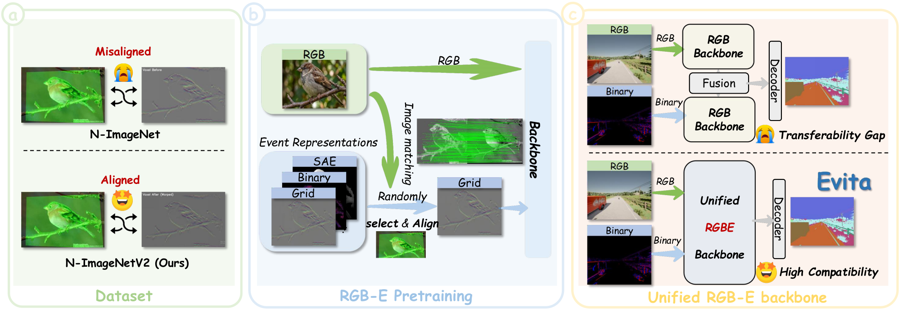
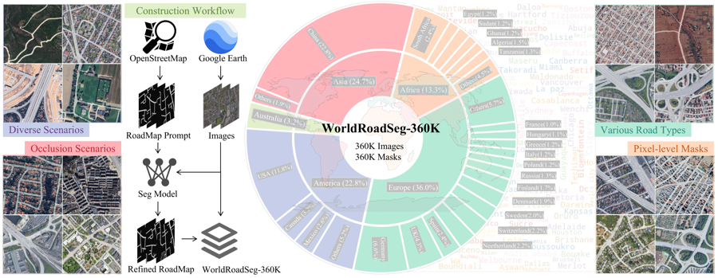
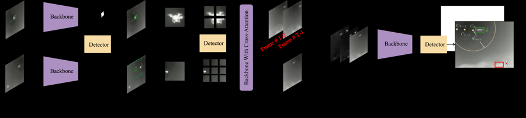

👋 About Me
I am a second-year Ph.D. student at Nankai University , working in Prof. Ming-Ming Cheng's research group under the supervision of Prof. Xiang Li . I am currently a Video Generation Algorithm Intern at Alibaba . My research focuses on multimodal model design and video generation .
🔥 News
2026
2026.07.10
Our preprint
Evita is now available on arXiv.
2026.06.15
We released
WorldRoadSeg-360K V1.0 with
RoadGIE .
2026.04.15
3rd Place in Tencent Games Algorithm Competition. 🎉
2026.02.27
Silver Medal in Kaggle Vesuvius Challenge – Surface Detection. 🎉
2026.02.21
RoadGIE was accepted by
CVPR 2026 .
🎉
2026.01.22
Silver Medal in Kaggle PhysioNet – Digitization of ECG Images. 🎉
2025
2025.10.14
Silver Medal in Kaggle RSNA Intracranial Aneurysm Detection. 🎉
2025.10.11
1st & 2nd in The 5th Jittor Artificial Intelligence Challenge. 🎉
2025.05.07
2025.03.10
We won 1st place in Track 1 and 2nd place in Track 2 at the CVPR Anti-UAV Challenge. 🎉
2025.02.24
2025.01.14
First Prize in Chang Guang Satellite High-Resolution Road Extraction. 🎉
2024
2024.12.01
1st Place in ICPR Weakly Supervised Infrared Small Target Detection. 🎉
2024.12.01
1st Place in ICPR Lightweight Infrared Small Target Detection. 🎉
2024.11.30
2024.10.20
1st Place in PRCV Wide-Area Infrared Small Target Detection. 🎉
2024.10.08
Gold Medal in Kaggle RSNA Lumbar Spine Degenerative Classification. 🎉
2024.09.20
3rd Place in China Aerospace AI Challenge – Remote Sensing Target Recognition. 🎉
2024.06.03
Gold Medal in Kaggle Image Matching Challenge. 🎉
2024.05.31
2024.04.08
Silver Medal in Kaggle HMS – Harmful Brain Activity Classification. 🎉
2024.02.08
Silver Medal in Kaggle SenNet + HOA Human Vasculature Segmentation. 🎉
📝 Publications

arXiv 2026
Chenxu Peng , Chongtian Zhou, Dicheng Liu, Bowen Yin, Yimian Dai, Xialei Liu, Ming-Ming Cheng, Xiang Li
arXiv preprint, 2026
A unified multimodal backbone for dense perception in challenging real-world scenes.

CVPR 2026
Chenxu Peng , Chenxu Wang, Yimian Dai, Yongxiang Liu, Ming-Ming Cheng, Xiang Li
IEEE/CVF Conference on Computer Vision and Pattern Recognition (CVPR), 2026
A global-scale benchmark for generalizable interactive road extraction from aerial imagery.

CVPRW 2025
Best Paper Award
Chenxu Peng , Chenxu Wang, Minrui Zou, Danyang Li, Zhengpeng Yang, Yimian Dai, Ming-Ming Cheng, Xiang Li
CVPR Workshops · Anti-UAV, 2025
A detection-based tracking framework that incorporates frame dynamics for UAV tracking.
More publications
Beyond Full Labels: Energy-Double-Guided Single-Point Prompt for Infrared Small Target Label Generation
IEEE Journal of Selected Topics in Applied Earth Observations and Remote Sensing, 18: 8125–8137, 2025
ICPR 2024 Competition on Resource-Limited Infrared Small Target Detection Challenge: Methods and Results
ICPR 2024 · pp. 62–77
Graph convolutional network with attention mechanism improve major depressive depression diagnosis based on plasma biomarkers and neuroimaging data
Journal of Affective Disorders, 360: 336–344, 2024
Super-resolved q-space learning of diffusion MRI
Medical Physics, 50(12): 7700–7713, 2023
Uncertainty-guided transformer for brain tumor segmentation
Medical & Biological Engineering & Computing, 61(12): 3289–3301, 2023
Validation of deep learning techniques for quality augmentation in diffusion MRI for clinical studies
NeuroImage: Clinical, 39: 103483, 2023
NTIRE 2022 Challenge on Stereo Image Super-Resolution: Methods and Results
CVPR Workshops, 2022 · pp. 906–919
Deep-Based Super-Angular Resolution for Diffusion Imaging
PRCV 2021 · pp. 513–523
🎓 Education
2025.09 — Present
Nankai University
Ph.D. in Computer Technology
2020.09 — 2023.06
Zhejiang University of Technology
M.S. in Control Science and Engineering
2016.09 — 2020.06
Jiangsu University of Science and Technology
B.Eng. in Electrical Engineering and Automation
💻 Work Experience
2026.07 — Present
Alibaba
Video Generation Algorithm Intern
2023.07 — 2025.06
SUPCON
Traffic Algorithm Engineer
2022.09 — 2023.05
Binjiang Institute of Zhejiang University
Medical Imaging Algorithm Intern
2021.06 — 2021.08
ArcSoft
Image Algorithm Intern
🏆 Competitions & Awards
2026
Silver Medal
Kaggle Vesuvius Challenge – Surface DetectionImage segmentation
Silver Medal
Kaggle PhysioNet – Digitization of ECG ImagesECG digitization
3rd Place
Tencent Games Algorithm Competition3D human motion reconstruction
2025
Silver Medal
Kaggle RSNA Intracranial Aneurysm DetectionObject detection
1st & 2nd
The 5th Jittor Artificial Intelligence ChallengeImage classification
1st Place
CVPR 4th Anti-UAV Workshop & Challenge · Track 1Object tracking
2nd Place
CVPR 4th Anti-UAV Workshop & Challenge · Track 2Object tracking
First Prize
Chang Guang Satellite High-Resolution Road ExtractionImage segmentation
2024
1st Place
PRCV Wide-Area Infrared Small Target DetectionInfrared small target detection
1st Place
ICPR Weakly Supervised Infrared Small Target DetectionWeakly supervised segmentation
1st Place
ICPR Lightweight Infrared Small Target DetectionEfficient segmentation
Gold Medal
Kaggle Image Matching ChallengeImage matching
Gold Medal
Kaggle RSNA Lumbar Spine Degenerative ClassificationMedical image analysis
Silver Medal
Kaggle HMS – Harmful Brain Activity ClassificationBrain activity classification
Silver Medal
Kaggle SenNet + HOA Human Vasculature Segmentation3D image segmentation
3rd Place
China Aerospace AI Challenge – Remote Sensing Target RecognitionObject detection
2023
1st Place
iFlyTek Brain PET Image Analysis & Disease PredictionImage classification
2nd Place
iFlyTek Crop Disease Image Recognition ChallengeImage classification
Silver Medal
Kaggle Ovarian Cancer ClassificationImage classification
Bronze Medal
Kaggle Google Contrails IdentificationImage segmentation
2022
1st Place
Baidu Temporal Action LocalizationAction recognition
Gold Medal
Kaggle HuBMAP + HPA Human Body AnalysisImage segmentation
Top 1%
Baidu Figure Skating Athlete Action RecognitionAction recognition
5th Place
MICCAI Migraine dMRI Super-ResolutionDiffusion MRI super-resolution
7th Place
CVPR Stereo Image Super-Resolution ChallengeStereo image super-resolution